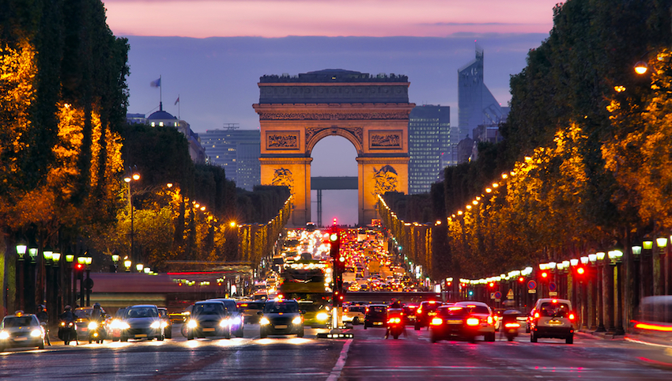

DESPRE FRANȚA
Franța se află la una dintre extremitățile vestice ale Europei. Are ieșire la Marea Nordului către nord, la Canalul Mânecii către nord-vest, la Oceanul Atlantic către vest și la Marea Mediterană către sud-est. Se învecinează cu Belgia și Luxemburg la nord-est, cu Germania și Elveția la est, cu Italia și cu Monaco la sud-est, cu Spania și cu Andorra la sud-vest.
De mai bine de două decenii, Franța este considerată cea mai populară destinație turistică din lume, primind anual 82 de milioane de turiști străini. Călătorii din întreaga lume sunt atrași de cultura sofisticată a Franței, bucătăria rafinată, vinurile fine, castelele romantice și peisajul rural pitoresc.
Francezii își numesc cu afecțiune patria „l’Hexagone” datorită formei sale distincte cu șase laturi. Fiecare colț al Franței are propriul său caracter unic: Alpii francezi accidentați, Provence însorit și cu ritm lent, fermecătoarea și superba Coastă de Azur și Alsacia idilică, o regiune pastorală în care cătunele din cărțile de povești sunt ascunse pe dealurile acoperite de viță de vie.
Parisul și Versailles sunt destinații obligatorii pentru o primă călătorie în Franța. Alte itinerarii de călătorie clasice includ opriri la stațiuni la modă de pe litoral, castele de basm și catedrale gotice glorioase.
Mai multe experiențe necunoscute se găsesc în mediul rural, cum ar fi fermele din Burgundia, satele de pescari din Bretania și băile termale din Munții Pirinei.
De la orașe cultivate la situri naturale curate, Franța oferă nenumărate atracții turistice. Descoperiți această țară fascinantă și diversă cu lista noastră cu cele mai bune locuri de vizitat în Franța.
1. PARIS
Apreciat pentru eleganța și bucuria de a trăi, Parisul este o mare capitală europeană plină de capodopere arhitecturale precum Turnul Eiffel și Catedrala Notre-Dame.
Reflectând moștenirea bogată a orașului, Luvru (unul dintre cele mai importante muzee din Paris) conține o colecție excepțională de arte plastice, în timp ce Musée d'Orsay și Musée de l'Orangerie prezintă comori ale artei impresioniste franceze.
Alte farmece ale Parisului sunt cartierele sale medievale și bulevardele grațioase. Experiențele turistice prin excelență includ cumpărăturile la librăriile din Cartierul Latin, plimbarea pe Champs-Elysées și observarea oamenilor de pe terasa unei cafenele de pe trotuar de pe Bulevardul Saint-Germain-de-Prés.

2. VERSAILLES
La o scurtă călătorie cu trenul de la Paris se află Château de Versailles, inclus în Patrimoniul UNESCO. Construit pentru Ludovic al XIV-lea („Regele Soare”), acest palat opulent din secolul al XVII-lea este o mărturie a gloriei și puterii absolute a monarhului francez.
Fațada baroc splendidă a castelului, uimitoarea Sala oglinzilor și grădinile formale împodobite cu fântâni permit vizitatorilor să-și imagineze o scenă a curții regale de altădată a Franței.
Versailles îi scufundă pe vizitatori în extravaganța Ancien Régime al Franței, lumea strălucitoare în care Marie-Antoinette a găzduit baluri generoase și petreceri în grădină.
Turiștii pot rătăci în jurul Le Hameau de la Reine, satul de țară imaginar creat de ultima regină ca o modalitate de a scăpa de formalitatea vieții de curte. Cătunul include un lac, livadă, porumbar și avea inițial o fabrică de lapte.
3. PATRIMONIUL MONDIAL UNESCO DIN REIMS

Reims este plasat în mod justificat pe lista Franței de „Villes d’Art et d’Histoire” („Orașe de artă și istorie”).
Dintre cele trei situri ale orașului incluse în Patrimoniul Mondial UNESCO, cea mai renumită este Cathédrale Notre-Dame de Reims, unde regii francezi au fost încoronați. Cel mai celebrat eveniment a fost când Ioana d’Arc l-a escortat pe Carol al VII-lea la catedrală în iulie 1429 pentru încoronarea sa ca rege.
Construită în secolul al XIII-lea, Catedrala Notre-Dame din Reims este o bijuterie a arhitecturii înalte gotice. Exteriorul orbitor prezintă o abundență de contraforturi zburătoare și îngeri sculptați, în timp ce interiorul spațios are o ambianță solemnă de spiritualitate.
Printre atracțiile de top ale orașului, alte repere de pe lista UNESCO includ Palais du Tau, un Palat Arhiepiscopal din secolul al XVII-lea și Bazilica Saint-Rémi din secolul al XI-lea.
4. PROVENCE

Spre deosebire de cerul gri din Paris și nordul Franței, fermecătoarea regiune Provence se bucură de soarele mediteranean strălucitor cea mai mare parte a anului. Această zonă rurală se simte neatinsă de lumea modernă și are un aspect accidentat, pământesc.
Dealurile ondulate sunt acoperite cu un mozaic de ferme mici, plantații de măslini, floarea soarelui și câmpuri de lavandă. Rozmarinul parfumat, salvie și cimbru și alte ierburi sălbatice cresc aici din abundență și însuflețesc bucătăria locală.
În acest peisaj de vis, pictorii impresioniști și-au găsit inspirație pentru a crea opere de artă vibrante.
5. COASTA DE AZUR

Cunoscută și sub numele de Riviera Franceză, Coasta de Azur este o porțiune plină de farmec a coastei mediteraneene, numită pentru apele sale de un albastru-azuriu adânc. Cerul este adesea o nuanță ceruleană fascinantă, de asemenea, datorită vremii însorite cea mai mare parte a anului în această zonă din sudul Franței.
Întinzându-se aproximativ de la Saint-Tropez (care se suprapune cu regiunea Provence) până la Menton, la mai puțin de 30 de kilometri de granița cu Italia, Coasta de Azur a fost o destinație la modă de stațiune pe litoral încă de la începutul secolului al XIX-lea.
Primăvara și toamna aduc vreme mai blândă și o atmosferă mai liniștită, mai relaxantă.
Coasta de Azur are câte ceva pentru toată lumea. Nisa este locul pentru a vă bucura de viața bună, a vizita muzee de artă și a vă plimba pe străzile pietruite și pe bulevardele mărginite de palmieri. La o scurtă călătorie cu mașina de Nisa se află locuri de vizitat ca excursii de o zi, cum ar fi vile splendide pe malul apei și muzee de artă de top.
Printre cele mai faimoase atracții turistice de pe Riviera Franceză se numără Cannes, care are o promenadă uimitoare pe malul mării și un oraș vechi atrăgător; și Monaco, un mic principat regal care este sinonim cu lux și decadență. Atât Cannes, cât și Monaco oferă hoteluri de cinci stele, restaurante apreciate și porturi pline de iahturi.
Închinătorii soarelui se îngrămădesc în Saint-Tropez, un loc plin de vacanță de vară, cu plaje private exclusiviste, precum și plaje publice care atrag turiștii obișnuiți. Turiștii apreciază Antibes pentru plajele sale întinse cu nisip, cartierul medieval atmosferic și fabulosul Muzeu Picasso găzduit într-un castel cu vedere la mare.